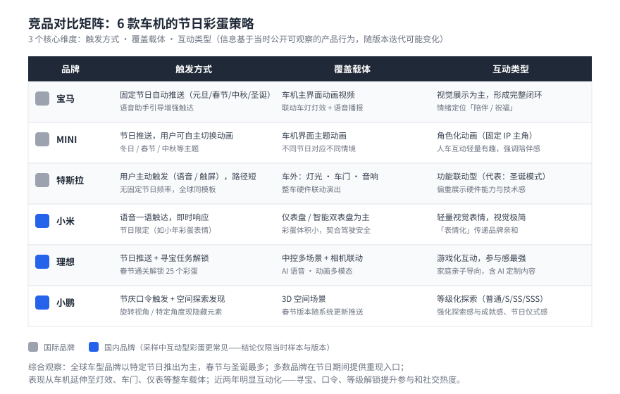
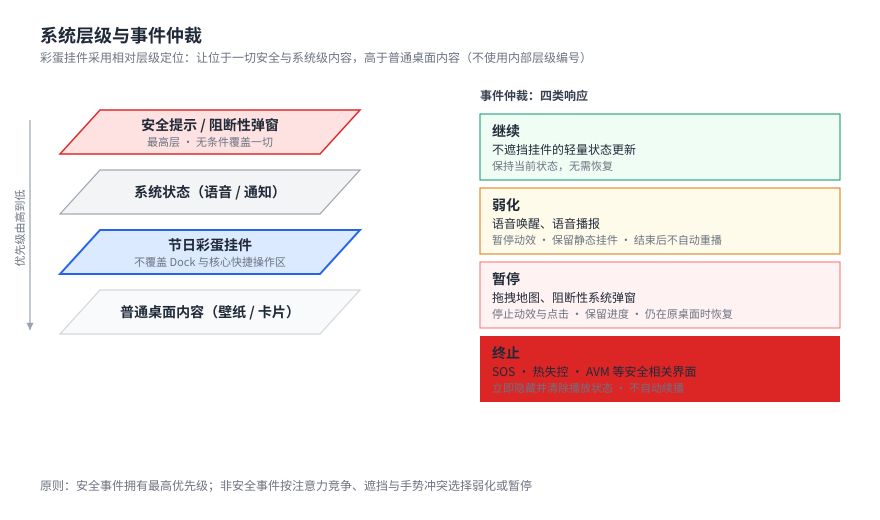
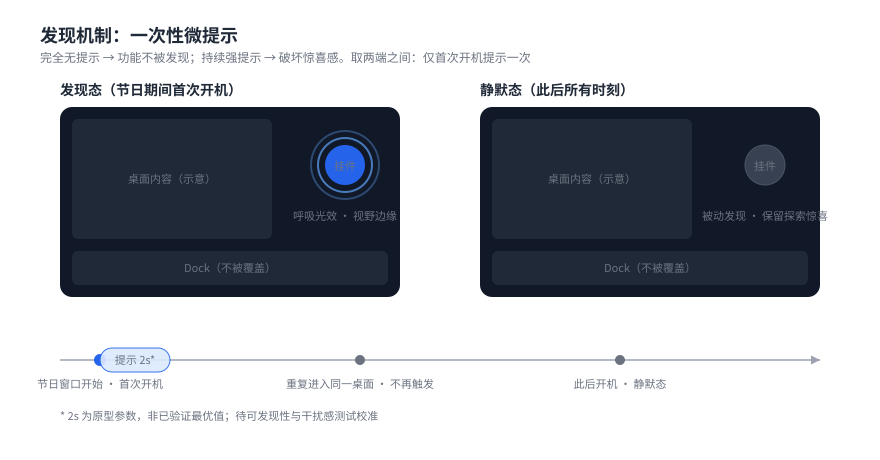
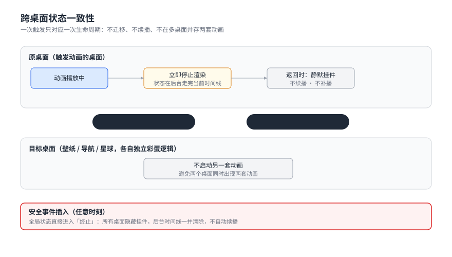

如何在安全约束下，让车机系统有情绪？
"节日彩蛋要带来惊喜，但不能造成惊吓。"
车机不是手机——彩蛋必须在驾驶安全优先、多桌面并存、系统层级严格的约束下运行。本项目负责前期规划：研究竞品趋势、定义系统边界、制定交互规范，让后续的视觉动效设计有清晰的框架可依。
从接到需求到规范交付，整个前期规划历时约三周，分四个阶段推进。
系统拆解 6 款国内外车机的节日彩蛋策略，提炼触发方式、层级位置、互动类型三个核心维度
确认彩蛋在系统层级中的位置、与现有功能模块的优先级关系、必须打断的安全事件清单
针对发现机制、跨桌面状态、节日优先级等边界情况逐一给出明确决策，减少视觉与开发阶段的回溯成本
与视觉动效团队、前端开发联合评审，确认规范可落地，输出最终版交互文档
系统分析了 BMW、MINI Cooper、特斯拉（国际品牌）及小米、理想、小鹏（国内品牌）六款车机的节日彩蛋策略，重点关注触发方式、覆盖桌面和互动类型三个维度。
在本次采样的国内产品中，互动型彩蛋比单纯视觉展示更常见——常通过触发动画、探索或小游戏提升参与感（结论仅适用于当时选取的样本与版本，不外推为全行业趋势）。该品牌的差异化切入点：把品牌温度转译成「有性格的陪伴感」，而不是继续增加玩法数量。

四条原则贯穿整个规范体系，每一条都是在反复取舍中提炼出的判断依据。
任何涉及人身安全的系统事件（SOS、热失控、AVM）必须无条件中断彩蛋，哪怕动画正在播放最关键的帧。
彩蛋应出现在用户的视野边缘，而不是正中央。发现它是一次意外收获，不是被强迫观看的广告。
彩蛋表现形式可以多样，但系统规则必须唯一、无歧义。面对创意提案与规则冲突时，先问规则能否稳定运行。
新用户需要引导，老用户不需要干扰。提示只在首次开机触发一次，之后回归被动发现，两种用户体验各得其所。
以下四个决策是前期规划阶段的核心产出，每一条都在安全约束与情绪体验之间找平衡点。
彩蛋挂件应该放在系统的哪一层？
相对层级：低于安全提示、系统状态与阻断性弹窗，高于普通桌面内容
彩蛋可见但不遮挡核心功能区；不覆盖 Dock 与核心快捷操作区（对外只表达相对层级与仲裁原则，不公开内部层级编号）
覆盖 Dock 快捷操作区的方案
挂件与高频按钮争夺同一区域，会增加误触风险并削弱快捷操作的稳定性

系统事件发生时，彩蛋如何让位？
「打断 / 不打断」不足以覆盖真实状态，因此将系统响应分为四类：
安全事件拥有最高优先级；非安全事件也要根据注意力竞争、遮挡和手势冲突选择弱化或暂停，而不是一概「不断动画」。
用户怎么知道挂件可以交互？
完全无提示 → 功能不被发现；持续强提示 → 破坏惊喜感。两端之间需要一个「一次性微提示」规则：
节日期间首次开机时，挂件用短暂呼吸光效提示可交互，随后回归被动发现态。
重复进入同一桌面不再触发提示，保留用户自主探索的惊喜空间。
原型暂以 2 秒作为动效参数，但它不是已验证的最优值，需通过可发现性与干扰感测试校准。该规则希望同时平衡首次发现与重复打扰，而不预先声称已经提高发现率。

触发壁纸彩蛋后切换到导航桌面，动画怎么处理？
壁纸桌面、导航桌面、星球桌面各自有独立的彩蛋逻辑。用户在动画播放中途切换桌面时：
用户离开触发动画的桌面后，原桌面立即停止渲染，动画状态在后台走完当前时间线；目标桌面不启动另一套动画。
返回原桌面时只看到静默挂件——不续播、不补播。若期间发生安全事件，全局进入「终止」，后台时间线一并清除。

一个节日彩蛋从「用户首次接触」到「节日结束退出」经历三个完整阶段，每个阶段有不同的交互状态和系统行为。
以下是交付给开发和动效团队的规范中几个关键边界定义——这类「边界情况」往往是视觉设计师容易忽略、开发同学需要明确答案的地方。
当两个节日时间重叠（如春节 + 情人节），遵循：法定节日 > 品牌限定节 > 季节节气。只显示优先级更高的彩蛋，不叠加两套，避免视觉混乱。
这个项目让我意识到：在车机系统里做交互设计，决策的核心不是「这个设计好不好看」，而是「这条规则在边界条件下是否稳定」。
彩蛋是情绪产品，但情绪需要建立在可靠的系统规则之上。每一条打断机制、每一个层级定位，都是在安全与体验之间找平衡点的过程。交互设计师在系统级产品里的价值，不只是设计界面，而是定义系统如何「做决定」。